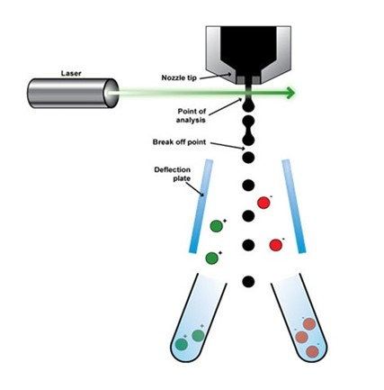
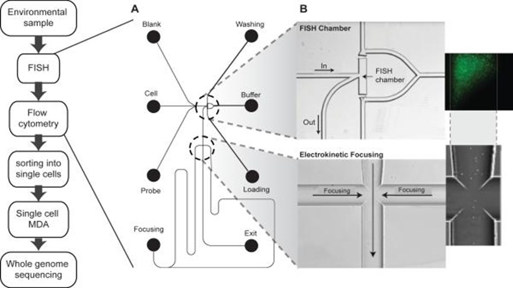
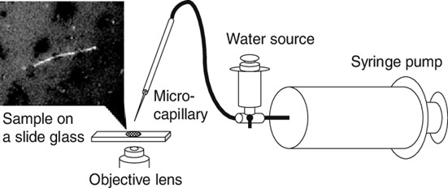
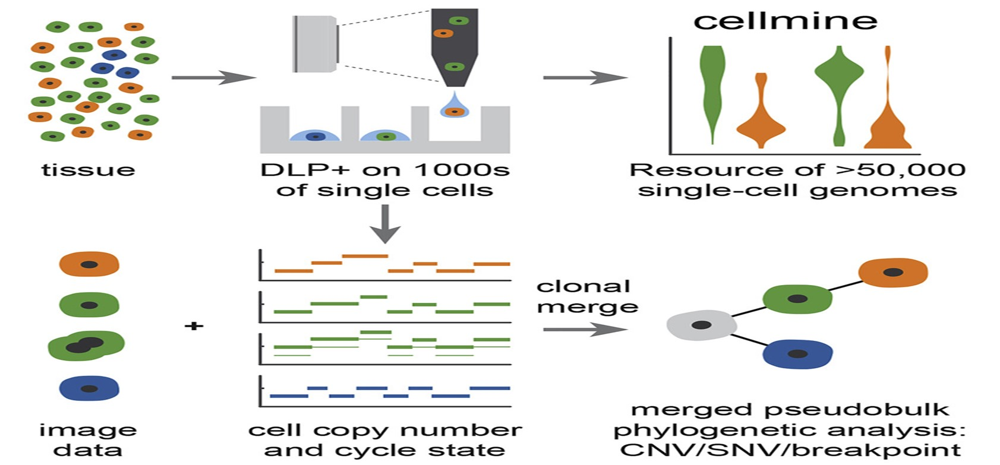

Direct Library Preparation: The Latest Innovation in Single-Cell Whole Genome Sequencing
Exploring a novel innovation in genome sequencing
Cell culture and tissue studies are becoming important in genomics and human biology. Despite the wide innovations in the field of cell studies, clinical results and experimental reviews from cell-based examinations are still largely tilted towards the conventional assumption that all cells derived from cultures and tissues are completely homogeneous.
How then should scientists study biological heterogeneity? Most importantly, how should they study the inherent properties of a single cell as an offshoot of the genome?
Cell Sequencing Processes and Studies
For decades on end, cell biologists have devised multiple cell sequencing methods to navigate beyond the technical difficulties of cell examination. Scientific insight into cell cultures and tissues are basically important in cancer studies and cell other forms of cellular anomalies5.
Single cell sequencing (SCS) techniques have long been considered a standard procedure in inter-cellular probing. When coupled with technological advancements in genome amplification and single cell isolation, SCS produces a valuable set in cellular studies of inherent properties at high resolution.
Currently, leading research centers worldwide employs Single-cell whole-genome sequencing as a routine procedure in probing intercellular genomic variations and studying single-nucleotide variations in single cells.
Despite the innovative results produced by these methods, studying genomic variations in with precise accuracy was still a big challenge in human medicine and cell biology. Scientists are consistently burdened with many question. The chief of which is – how exactly should we qualitatively study genomic features and cell heterogeneity?
Popular Methods of Isolating Single Cells
The scientific race to isolate single cell from a whole genome started properly in 20097. Based on available evidence and the increasing need for cell-based studies in microbiology, scientists were able to analyze transcriptome complexity in individual cells using the first cell whole transcriptome sequencing protocol.
The scientific race to isolate single cell from a whole genome started properly in 2009. Based on available evidence and the increasing need for cell-based studies in microbiology, scientists were able to analyze transcriptome complexity in individual cells using the first cell whole transcriptome sequencing protocol.
Two years later, the science evolved and single-cell whole-genome sequencing was created . This breakthrough ushered in a new wave of scientific inquiries that led to the development of a single cell whole exome sequencing in 2012, and in 2013, a novel method of single cell epigenomic sequencing was developed.
As expected, the methods to isolating single cell from a whole genome were formed around these protocols. Currently, there are a few methods employed by different leading research institutions around the world in isolating single cells from cell culture or tissue mass. These methods, although effective to an extent, were with many shortcomings.
To a large extent, the general challenge associated with these old methods is in adequately controlling the quality and quantity of cell isolates extracted from tissues or cell cultures. These old methods include:
Fluorescence Activated Cell Sorting (FACS)
Microfluidics
Mechanical Micromanipulation
1. Fluorescence Activated Cell Sorting (FACS)
With wide application in microbiology, immunology, and embryonic development, Fluorescence Activated Cell Sorting is widely used in many laboratories and genomic research facilities. A popular high point linked with FACS is the ease and efficiency with which this method can isolate multiple cells (hundreds of thousands of cells) in split timing.

The protocol of operation of cell isolation in FACS is centered on
Cell size
Cell Fluorescence Properties
Cell Granularity
This method is generally considered efficient and fast as it creates a unique system of cell sorting. When in use, FACS can easily isolate designated cells from a tissue sample or genome by exploring the ability of these cells to fluorescence when pre-labeled.
This unique property of the FACS cell-sorting protocol explains its popularity in the study f single viral particles in a poll or assemblage of mixed viral genome. When compared with recently developed protocols, such as the Direct Library Preparation Plus, the Fluorescence Activated Cell Sorting method is limited in application.
In this method, it is compulsory that a bulk of the cell assemblage be prepared as sorting material and samples must be prepared in solution. Earlier observation reports also holds that the fluorescent dye used in cell labeling can damage the viability of cells or influence the inherent properties of the single cells1.
2. Microfluids
The shortcomings with FACS, especially the need for an abundant cell assemblage and risk of losing cell viability, led to the development of Microfluidics. This method employs a protocol setting completely different in mechanism to the FACS.
Microfluidics is widely used in
Microbiology
Embryonic development studies
Neurobiology
Basically, the Microfluidics setup7 uses a highly integrated system to achieve single cell culture and sequencing by manipulating small volumes of a few hundreds of micro-liters of fluids. As the nomenclature suggests, Microfluidics needs only a few volume of fluids in cell-based studies3.

Research institutes from around the world are currently experimenting with the feasibility of employing Microfluidics in human medicine especially in the areas of epigenomics sequencing and single cell whole-genome studies.
In the laboratories and microbiological studies, Microfluidics can effectively separate biological nanoparticles from tissues samples, cell cultures and cell assemblage. In a 2016 publication of Nature, the future of Microfluidics was examined based on coverage and advantage in cell sequencing6.
Reports from this review suggest that Microfluidics produces accurate results with a unique level of sensitivity in almost all research applications as reported. This method can also finely resolve nanoliter-to-picoliter volumes of samples in research studies that need timely analysis and effective outcomes in low volume fluids.
3. Mechanical Micromanipulation
As an old and classic method in cell isolation and single-cell based studies, Mechanical Micromanipulation surely deserves an honorable mention. This manual method is cost-efficient and can only need cheap instrumentation especially when results are not needed to be extremely accurate.
This explains the continued use of Mechanical Micromanipulation in many Microbiology research laboratories around the world, despite the popularity of new methods. The Mechanical Micromanipulation setup only requires the mechanical suctioning of a single cell from a cell assemblage using a capillary pipette, microscope and other supporting instruments2.

Cell isolation is not automatic and as such requires personnel guidance in the visual inspection of single-cell color features and morphological characteristics. The shortcoming of Mechanical Micromanipulation is centered on its manual processes.
Ranging from personnel faults, to mechanical shearing during manipulation and the possibility of cell damage, the shortcoming of Mechanical Micromanipulation appears to be unlimited in perspective.
Although, the microscope provides a means of exact cell identification in a tissue sample, an unskilled personnel might misidentify the target cell and the whole process is time-consuming. These shortcoming are solved in Microfluidics and the Fluorescence Activated Cell Sorting method
Direct Library Preparation Method: The Latest Innovation in Cell Sequencing
The Direct Library Preparation method of cell sequencing was developed as a scalable single-cell whole-genome sequencing platform. Compared to other methods before this innovation, the Direct Library Preparation instrumentation is perfectly designed for accuracy, high resolution and unparalleled efficiency in cell isolation experiments and research findings.
Recently published biotech reviews on this subject matter have positioned DLP as more than just an innovation in cell isolation studies. By large, it ushers in an era where microbiology and human medicine can optimally benefit from technology.

The instrumentation boasts of open source computational methods, image-based object recognition and commodity instrument. This innovation is widely used in many research finding for the identification of clonal populations and their corresponding genomic features.
Direct Library Preparation has shown useful prospects in
Tumor studies
Microbiology
Neurology
Immunology
Embryonic development studies
By extension, there are theoretical evidences supporting the use of this novel method in genome heterogeneity studies, mutational processes and findings on clonal evolution in healthy and cancer tissues. Early reviews and studies on the Direct Library Preparation platform showed that it can capture a high-resolution microscopy images of cells. These images are captured as the cells navigates a transparent nozzle as they settle in wells.
Image output allows for exact cell identification and separation. All single cell captures are lysed processes to produce unique sequencing inserts. Standard illumina protocols and allows the researcher to pool and sequence indexed libraries at the desired coverage depth.
The wide application of Direct Library Preparation in the research might also be linked with the innovative advantage of the development and inclusion of an open-source, cloud compatible software infrastructure. This inclusion allows the bulk storage of data and metadata produced in all sequencing and imaging processes. Based on a researcher’s preference, the result generated from this storage can be loaded into selected data visualization and assessment platform for further studies, data exploration and quality control.
An early report on the application of Direct Library Preparation was published by a January 2020 issue of Nature Methods. The authors in this study use Direct Library Preparation to generate a resource of 51,926 single-cell genomes and matched cell images from diverse cell types including cell lines, xenograft and diagnostic samples with limited material. The resource bulk generated allows the study of variations in mitotic mis-segregation rates across tissues types and genotypes. As expected, the analysis of genomic matches obtained and images captured aided in establishing a correlation between cellular morphology and genome ploidy states4.
This single review on DLP argued a case for its integration into medical sciences especially in tumor and embryonic development studies. This study, as reported, also documented the calculation of single-nucleotide resolution clonal genotypes and inferences of clonal phylogenies using aggregation of cells sharing copy number profiles. As a last result in this study, the authors also reported clone-specific chromosomal aneuploidy in polyclonal populations as defined by joint analysis of the listed features. Speculations on the readiness of DLP’s use in human medicine are currently on debate.
However, there are enough evidence to argue for its usefulness in tumor studies. By allowing the measurement of clonal replication states and rare aneuploidy patterns of single cells, DLP is evidently suitable for embryonic development and tumor tracking studies.
Comparison, Benefits and Features
Microfluidics, Mechanical Micromanipulation and Fluorescence Activated Cell Sorting are methods developed early in cell isolation and single cell studies. However, the shortcoming of these methods have called for their replacement in many research studies and laboratory institutes.
The biggest challenge posed by these methods is that samples must be prepared in suspension and thus, the spatial location of the target cells in the tissues or cell cultures can be lost easily. Surprisingly, the Direct Library Preparation protocol is affordable and can be widely used on scalable methods in human and cellular studies.
This method is also widely considered a low bias method that can allow the spontaneous and in-depth analysis of variety of samples. In essence, this method can be effectively employed in genomic matching of tissues, cell assemblage and cell cultures.
How Direct Library Preparation Solves the Problems in Cell Sequencing
Unlike other methods, the Direct Library Preparation method also allows the determination of copy number variations (CNV), single nucleotide polymorphisms (SNPs), phylogenic reconstructions and cluster analyses.
The arrays of benefits of using the DLP in research and experimental findings are limitless and include:
Low reagent cost
High quality of singe cell whole genome libraries
Lineage reconstructions
Use in the analysis of any cell and nuclei from 5 to 80 micrometer.
To a large extent, DLP solved the myriads of shortcomings associated with the early methods employed in cell sequencing researches. Using the Direct Library Preparation (DLP) method in single-cell whole-genome sequencing of clinical sample is currently considered one of the best approach for cell isolation in modern biotechnology.
This is coming at a time when Direct Library Preparation in human medicine is increasingly becoming a topic of global scientific interest8. With time, more adoption of Direct Library Preparation method is expected to be recorded in many research facilities around the world.